Интерактивная модель территории верфи вместо статичной карты на корпоративном портале: поиск зданий, сведения о каждом из них и реестр экспертиз промышленной безопасности в одном окне браузера.
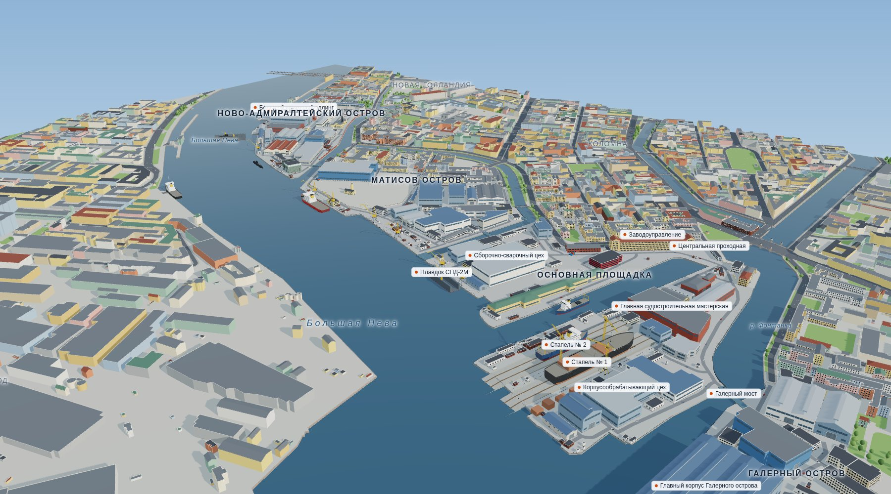
Схема показывает, где стоят здания, но не отвечает на вопросы, с которыми к ней приходят сотрудники: где нужный корпус, что это за здание, какие у него размеры и когда по нему истекает экспертиза.
Вместо схемы — объёмная модель всей территории верфи. Она открывается в браузере на компьютере и телефоне. Контуры зданий, улиц и воды взяты из открытых картографических данных (OpenStreetMap, Microsoft ML Buildings через Overture Maps), внутренние элементы — с карты предприятия, совмещённой с местностью; медианное отклонение контуров — 2,7 м.
| Задача | Было | Стало |
|---|---|---|
| Найти здание | Искать глазами по номеру на схеме | Поиск по названию или коду; камера подлетает к зданию по щелчку в списке или двойному щелчку на модели |
| Узнать о здании | На схеме только контур и номер | Карточка: назначение, размеры, высота, этажность, площадь застройки, общая площадь, строительный объём, координаты |
| Представить территорию | Плоская схема | 3D-модель: 282 здания верфи, стапели, краны, плавдоки, суда, забор, дороги, город и Нева; готовые виды, план, экскурсия, время суток |
| Сроки ЭПБ, класс ОПО | Таблицы служб, отбор вручную | Реестр 304 объектов: отбор «срок ЭПБ истекает в ближайшие 1–5 лет», подсветка на модели, выгрузка в Excel с этажностью, площадью, объёмом и классом ОПО |
| Убрать лишнее | — | Кнопка «Только верфь» скрывает городскую застройку, остаётся территория предприятия |
| Передать проектировщикам | — | Выгрузка генплана в DXF, 3D-модели в GLB, слоёв в GeoJSON |
| Обновлять карту | Перерисовывать схему | Редактор на карте: правка, перемещение, новые и снесённые здания, подразделения |
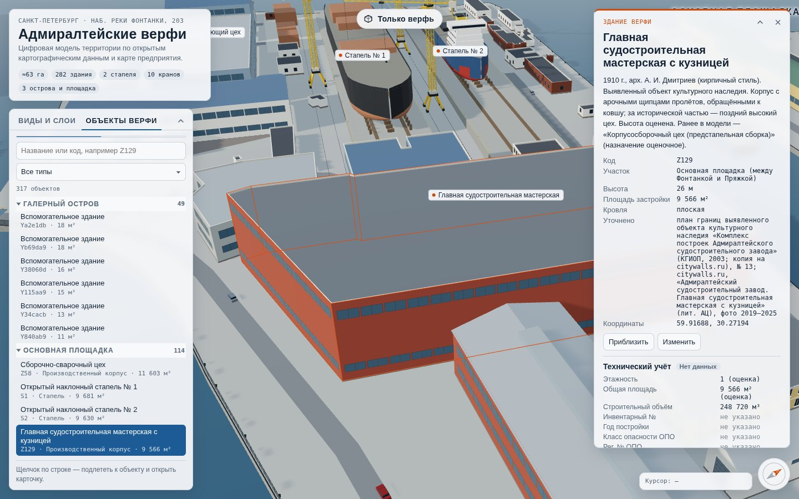
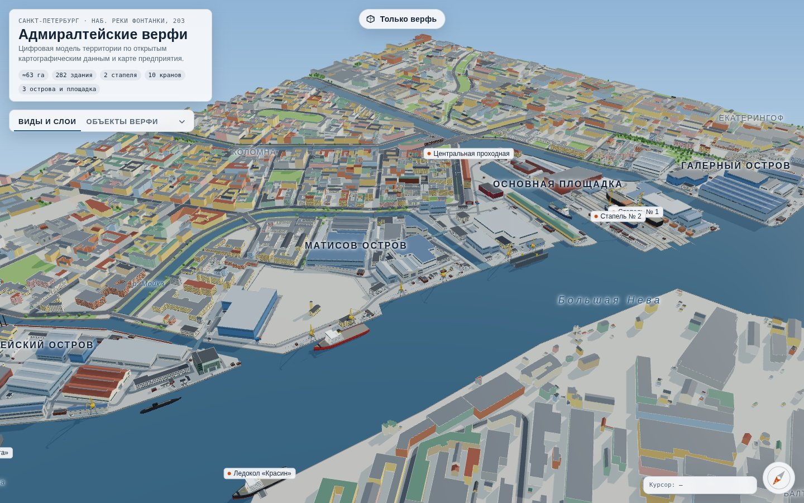
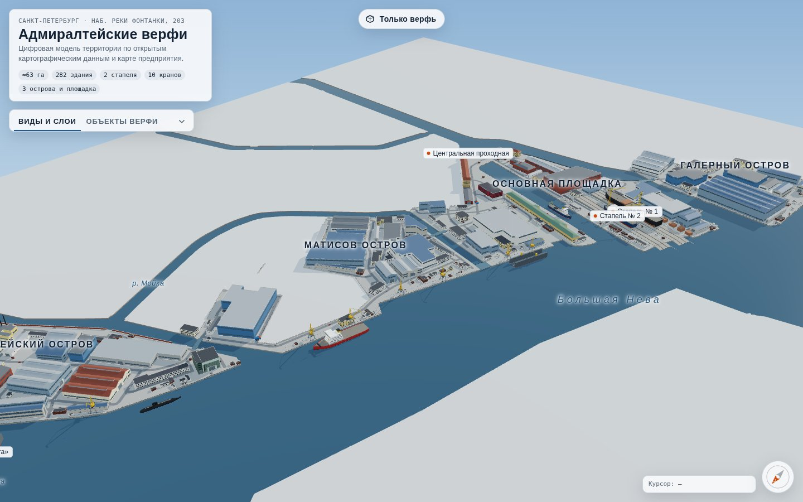
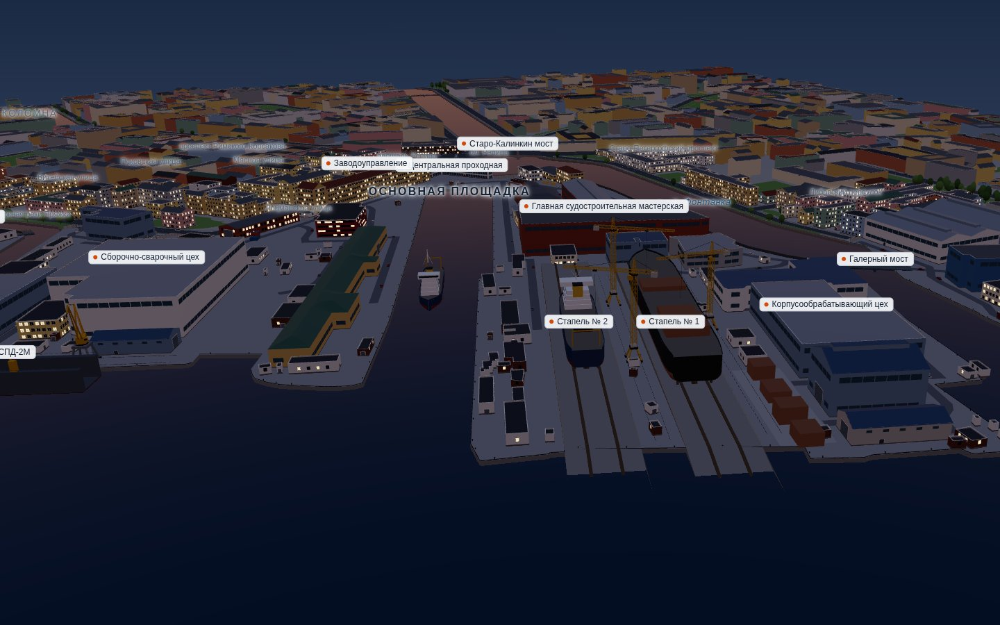
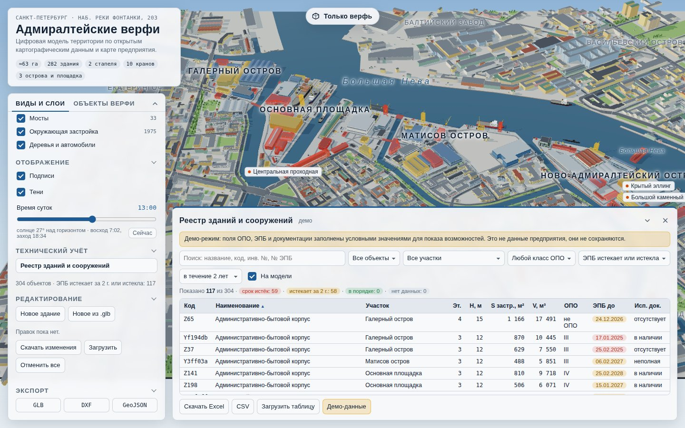
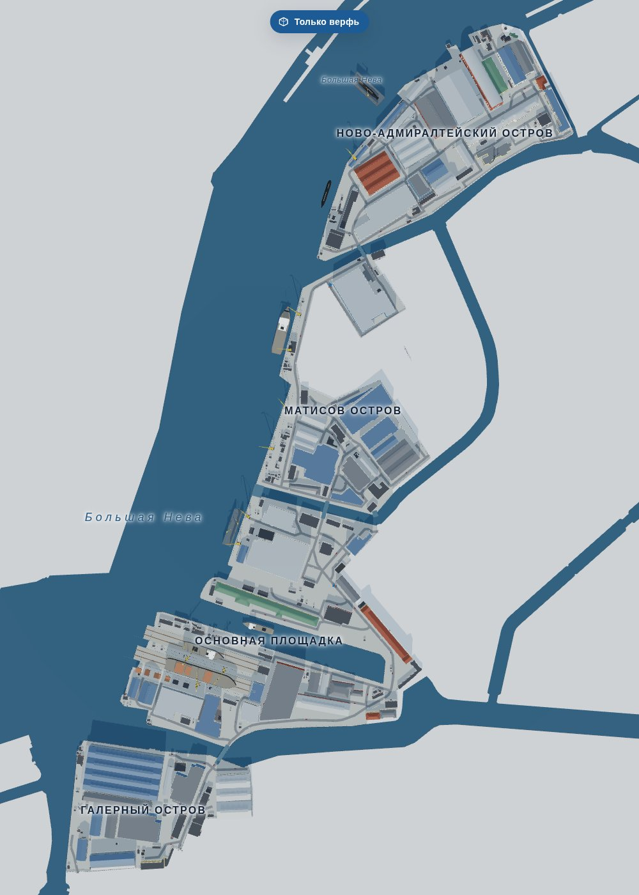
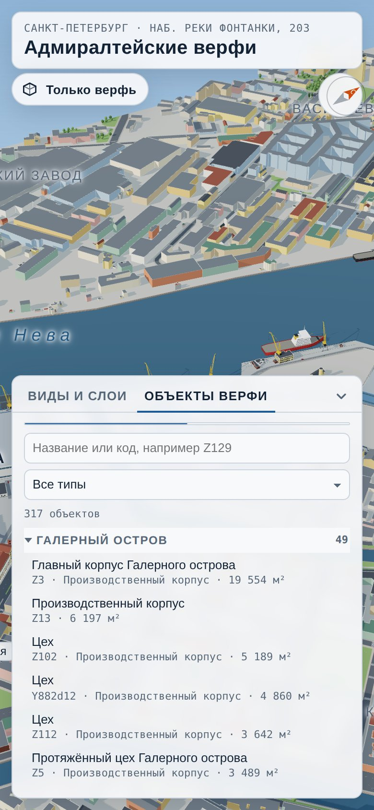
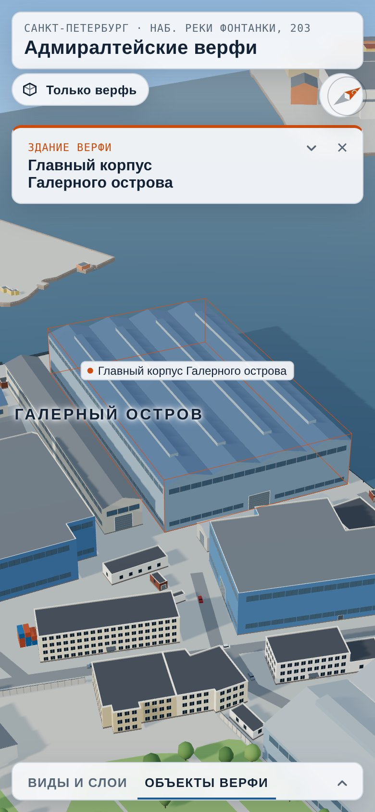
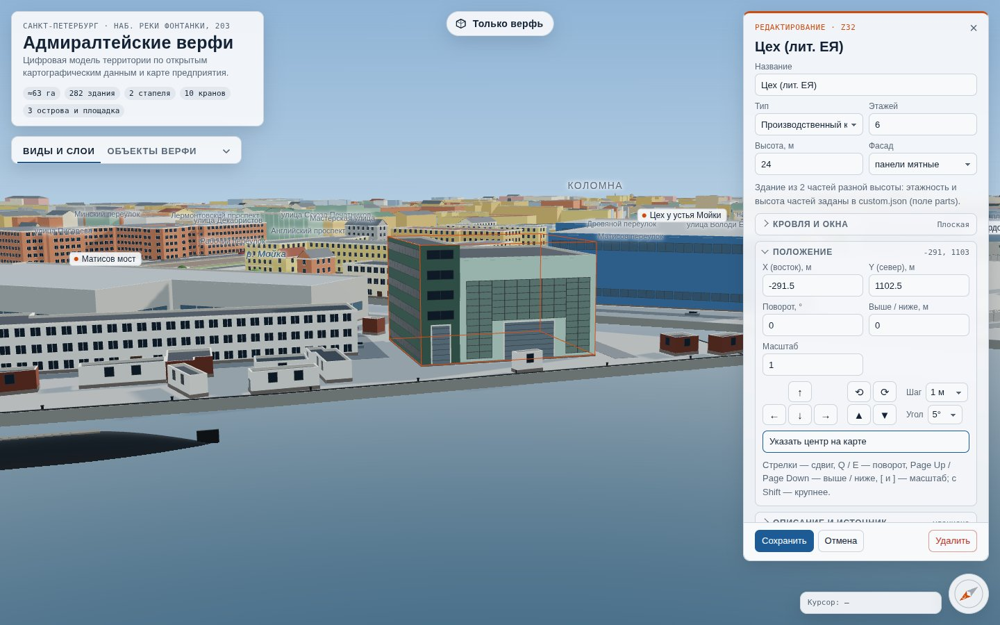
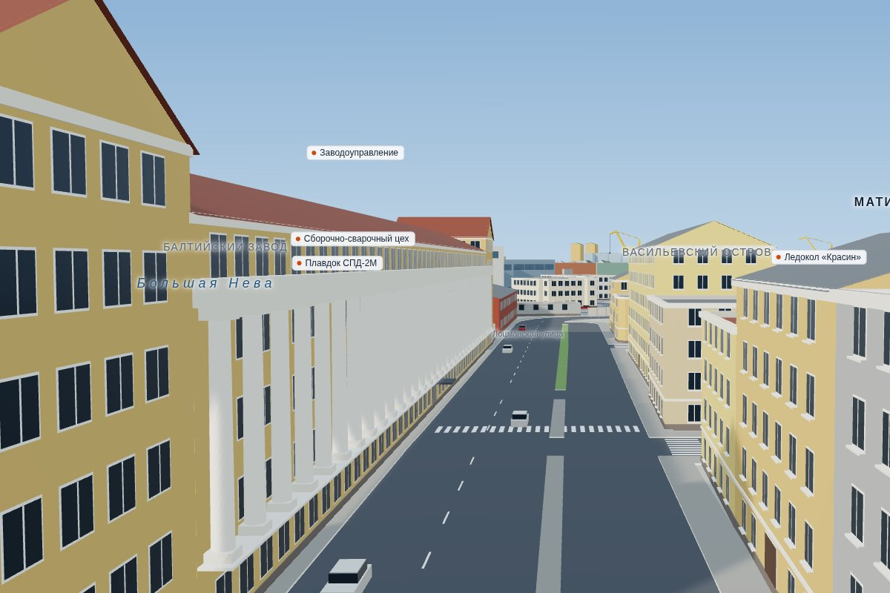
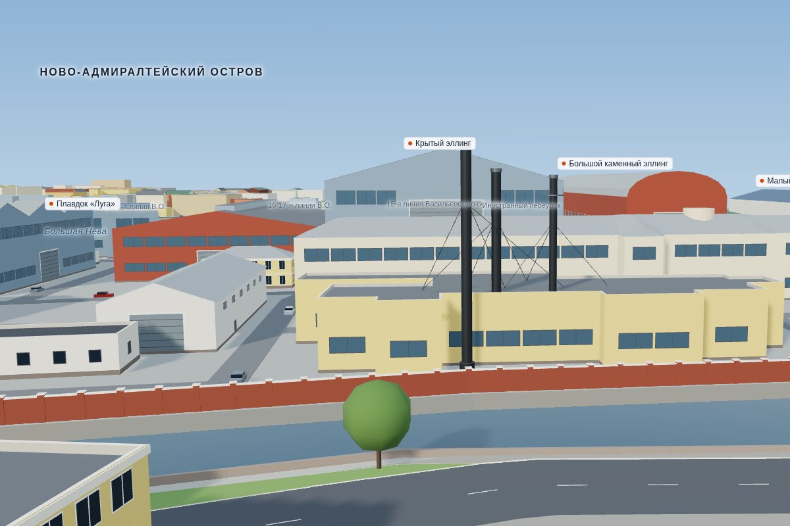
Здание находится по названию или коду, камера подлетает к нему, карточка сразу показывает назначение, размеры, этажность, площадь и объём.
Список зданий и сооружений, у которых срок экспертизы истекает в ближайшие 1–5 лет или уже истёк, — одним отбором. Помогает заранее планировать экспертизы и не допускать эксплуатации объектов без действующего заключения.
Выгрузка реестра с этажностью, площадью застройки, общей площадью, строительным объёмом, классом ОПО и сроками ЭПБ. Заполненную таблицу можно загрузить обратно.
Наглядная модель для сотрудников, новичков, подрядчиков и гостей; работает на компьютере и телефоне, без установки программ.
Генплан в DXF (AutoCAD, nanoCAD, КОМПАС-3D), 3D-модель в GLB (Blender, 3ds Max), слои в GeoJSON для ГИС.
Снесённое здание удаляют, новое ставят, перестроенное правят прямо на странице — без программиста и без перерисовки схемы. Правки сохраняются в модели и выгрузках.
Подразделения и ответственные в карточке здания; поиск по названию службы или фамилии, подсветка всех зданий подразделения на модели.
Свободные библиотеки и открытые данные. На портале это одна HTML-страница около 2,1 МБ — отдельный сервер приложений не нужен.
| Территория верфи | 63 га · Галерный остров, основная площадка, Матисов и Ново-Адмиралтейский острова |
| Здания верфи | 282 — с назначением, размерами, высотой и площадью; 33 уточнены по документам и фото |
| Производственные объекты | 2 стапеля · 10 кранов · 2 плавдока · 6 судов |
| Окружение | 1 975 зданий города, улицы, мосты, Нева, Фонтанка и Пряжка |
| Реестр ЭПБ и ОПО | 304 объекта: здания, стапели, краны, плавдоки, заводские мосты |
| Точность контуров | медианное отклонение 2,7 м при совмещении карты предприятия с местностью |
| Размещение | один файл 2,1 МБ, работает без интернета и сервера |
| Выгрузки | GLB · DXF · GeoJSON · Excel |
Источники: контуры зданий, улиц и воды — OpenStreetMap и Microsoft ML Buildings через Overture Maps (лицензия ODbL); назначение цехов, стапели и краны — карта предприятия. Высоты цехов верфи в открытых данных отсутствуют и оценены; исторические и приметные здания уточнены по плану КГИОП (2003), схемам РГИС и фотографиям citywalls.ru и Wikimedia Commons.